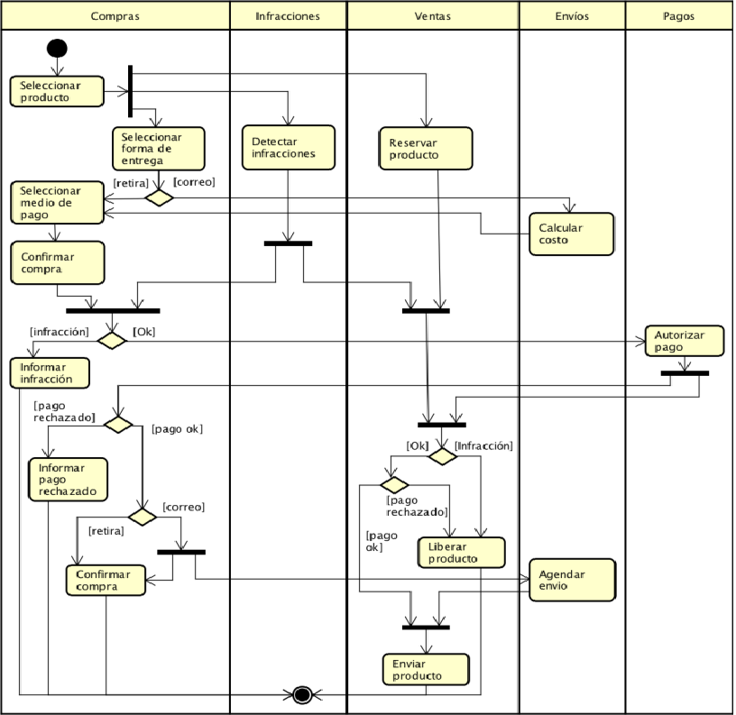
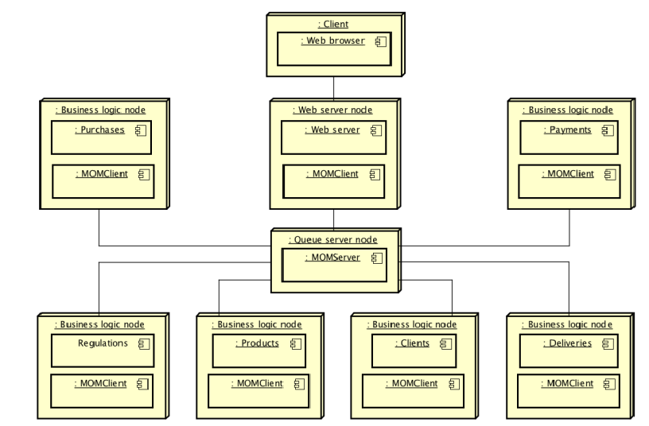
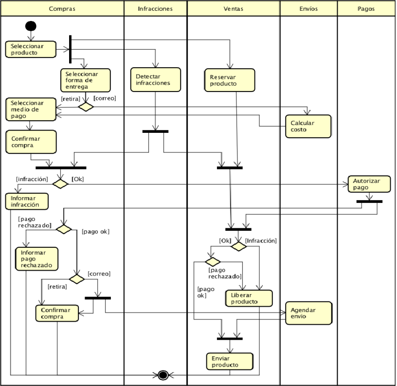
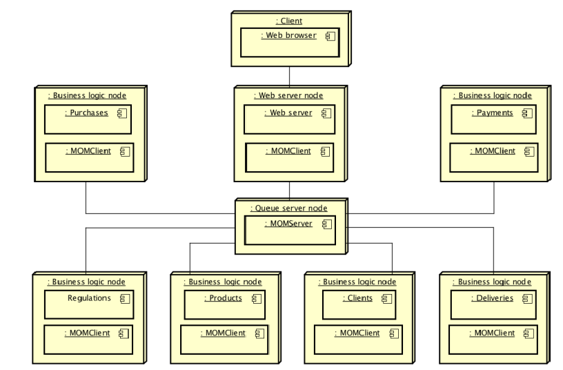

Trabajo de Laboratorio - Catedra: Sistemas Distribuidos (Año: 2017)
Descripción del problema:
Un sitio de venta online (como mercado libre1 o ebay2) maneja información sobre productos,
compradores, vendedores, compras, pagos y envíos. El sistema está integrado por varios servidores que a su vez interactuan con sistemas de otras organizaciones, como ser de tarjetas de crédito
y de empresas de correo.
Nos enfocamos en el proceso de negocio que corresponde a la compra de productos. El proceso inicia cuando el cliente indica que desea comprar un producto.
Inmediatamente el departamento de infracciones comienza una revisión del chat entre el vendedor
y el comprador en búsqueda de violaciones al reglamento del sitio. El departamento de ventas,
a su vez, reserva el producto para asegurar el cumplimiento de las condiciones de venta en caso
de que la compra sea exitosa. Luego el comprador elige la forma de entrega y de pago. En caso
de que el comprador decida que el producto se le envíe por correo, el departamento de envíos
calcula el costo del envío antes de que el comprador elija la forma de pago. Subsecuentemente
se le informa al comprador un resumen de las condiciones de compra, y se le solicita confirmar
la misma. Si la confirma, y no hay infracción, el departamento de pagos procede a efectivizar
el pago (utilizando los servicios provistos por los medios de pagos contratados). Una vez que el
pago es confirmado, el departamento de envíos agenda el envío con la empresa de correo elegida.

El diseño del sistema para soportar la compra de productos se muestra en la siguiente figura. Existen tres tipos de servidores: de lógica del negocio, de mensajería, y web. Cada servidor de lógica del negocio se dedica a una de las siguientes funciones: compras, pagos, reglamentos, productos, clientes, envíos. La interacción entre los servidores web y de logica del negocio es mediada por un servidor de mensajería, que aloja las colas de mensajes a través de las cuales el proceso se lleva adelante. Un servidor web permite a los clientes acceder a la funcionalidad de compra/venta. Todos los servidores persisten regularmente su estado. En el caso de que un servidor caiga, el mismo puede re-iniciarse a su estado persistido.


El diseño del sistema para soportar la compra de productos se muestra en la siguiente figura. Existen tres tipos de servidores: de lógica del negocio, de mensajería, y web. Cada servidor de lógica del negocio se dedica a una de las siguientes funciones: compras, pagos, reglamentos, productos, clientes, envíos. La interacción entre los servidores web y de logica del negocio es mediada por un servidor de mensajería, que aloja las colas de mensajes a través de las cuales el proceso se lleva adelante. Un servidor web permite a los clientes acceder a la funcionalidad de compra/venta. Todos los servidores persisten regularmente su estado. En el caso de que un servidor caiga, el mismo puede re-iniciarse a su estado persistido.
